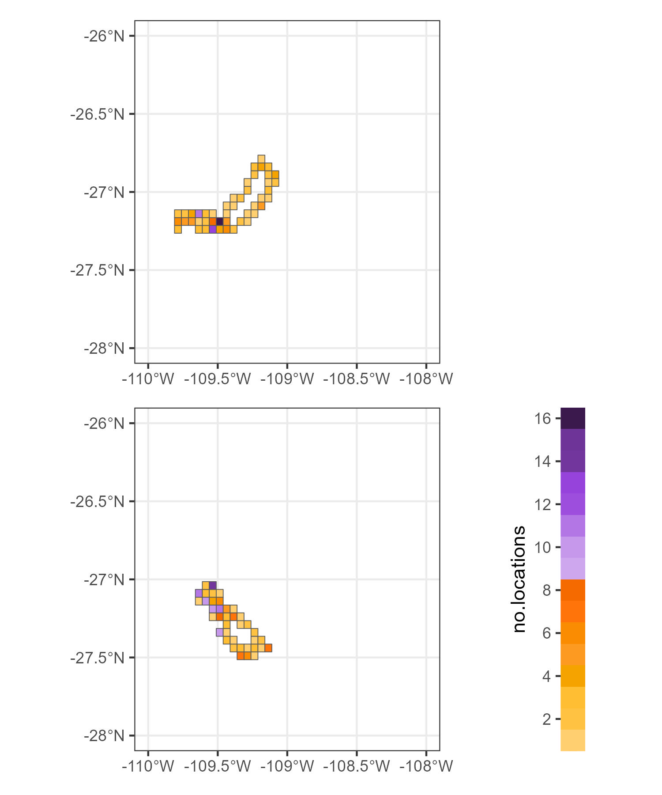

my_data<-(sula::GPS_preparado)Reference legend multiplots
r
ggplot2
gis
Y2023
Create a plot to be use as reference legend for multiple plots
Data
For this example, we will use the data provided in the package sula
The data is from tracked masked boobies at Rapa Nui
The data is already in tidy format
Grid
The steps on this parts are on “how to create grid”
Packages to use:
library(tidyverse)
library(sf)
library(ggplot2)Run to create a reference grid.
my_points<-my_data %>%
st_as_sf(coords=c('Longitude','Latitude'),
crs=4326,
remove=FALSE)
my_grid<-st_make_grid(my_points,
c(0.05, 0.05),
what = "polygons",
square = TRUE)
my_grid_sf = st_sf(my_grid) %>%
mutate(grid_id = 1:length(lengths(my_grid)))
my_grid_sf$nlocs <- lengths(st_intersects(my_grid_sf,
my_points))For the exercices, we want to create plots per individual.
So lets first check the name of the individuals.
unique(my_data$IDs)To count number of locations per grid and add it as a column in the original grid functions from the package tidyverse can be used.
GPS01_subset<- my_data %>%
filter(IDs=='GPS01')
GPS01_sf<-GPS01_subset %>%
st_as_sf(coords=c('Longitude','Latitude'),
crs=4326,
remove=FALSE)
my_grid_sf$GPS01_nlocs<- lengths(st_intersects(my_grid_sf,
GPS01_sf))GPS02_subset<- my_data %>%
filter(IDs=='GPS02')
GPS02_sf<-GPS02_subset %>%
st_as_sf(coords=c('Longitude','Latitude'),
crs=4326,
remove=FALSE)
my_grid_sf$GPS02_nlocs<- lengths(st_intersects(my_grid_sf,
GPS02_sf))Plots
Custom palette
Now to create a plot, lets select your palette based on the number of locations.
range(my_grid_sf$GPS01_nlocs)
range(my_grid_sf$GPS02_nlocs)Because the palette is between 0 and 16, we will manually create the palette using characters.
my_palette <- c("1" = "#FFCF70",
"2" = "#FFC242",
"3" = "#FFBE33",
"4" = "#F5A300",
"5" = "#FD9A21",
"6" = "#FA8C02",
"7" = "#FF740A",
"8" = "#F56A00",
"9" = "#CEA7EE",
"10" = "#C698EB",
"11" = "#B376E5",
"12" = "#9D4EDD",
"13" = "#9643DB",
"14" = "#72369D",
"15" = "#6E3498",
"16" = "#3B194D")To create the plot:
- Subset only to grids with data
- Convert the locations into character
- Add palette in scale_fill_manual
4. Remove legend
GPS01_plot<-ggplot()+
geom_sf(data=subset(my_grid_sf,GPS01_nlocs != 0),
aes(fill=as.character(GPS01_nlocs)))+
theme_bw()+
scale_fill_manual(name = "no.locs",values = my_palette)+
theme(legend.position = 'none')+
coord_sf(xlim = c(-110, -108),ylim = c(-28, -26))+
scale_x_continuous(labels = function(x) paste0(x, '\u00B0', "W")) +
scale_y_continuous(labels = function(x) paste0(x, '\u00B0', "N"))
GPS01_plotGPS02_plot<-ggplot()+
geom_sf(data=subset(my_grid_sf,GPS02_nlocs != 0),
aes(fill=as.character(GPS02_nlocs)))+
theme_bw()+
scale_fill_manual(name = "no.locs",values = my_palette)+
theme(legend.position = 'none')+
coord_sf(xlim = c(-110, -108),ylim = c(-28, -26))+
scale_x_continuous(labels = function(x) paste0(x, '\u00B0', "W")) +
scale_y_continuous(labels = function(x) paste0(x, '\u00B0', "N"))
GPS02_plotLegend
Now to create the legend, the information on the number of locations is also relevant as we will create a data frame with the number of locations and assign a color.
To create the data frame:
this_legend <- data.frame(id = rep(1, 16), no.locations = 1:16)To assign a color:
my_legend_palette <- c(my_palette[[1]],
my_palette[[2]],
my_palette[[3]],
my_palette[[4]],
my_palette[[5]],
my_palette[[6]],
my_palette[[7]],
my_palette[[8]],
my_palette[[9]],
my_palette[[10]],
my_palette[[11]],
my_palette[[12]],
my_palette[[13]],
my_palette[[14]],
my_palette[[15]],
my_palette[[16]])To create the plot, we will use the geometry geom_tile.
We can duplicate it just to make the plot thicker.
plot_tracks_legend<-ggplot(this_legend) +
geom_tile(aes(x = 0.5, y=no.locations, fill = as.factor(no.locations))) +
geom_tile(aes(x = 1, y=no.locations, fill = as.factor(no.locations))) +
scale_x_continuous(expand = c(0, 0),limits=c(0,5))+
scale_y_continuous(name="no.locations",breaks=seq(0, 16, 2),expand = c(0, 0))+
theme_bw()+
scale_fill_manual(values=my_palette)+
theme(legend.position='none',
panel.grid.major = element_blank(),
panel.grid.minor = element_blank(),
panel.background = element_blank(),
panel.border = element_blank(),
axis.title.x = element_blank(),
axis.text.x = element_blank(),
axis.ticks.x = element_blank()
)
plot_tracks_legendPatchwork
The package patchwork is very useful to create multiplots, a layout of several plots.
library(patchwork)The arguments to create our layout will include:
- An empty plot (plot_spacer)
- ncols is the number of columns
- widths are the widths of each of the columns, here the plot is larger (5) and the legend thinner (1)
- heights are to create equal height line of plots
(GPS01_plot+plot_spacer()+
GPS02_plot+plot_tracks_legend)+
plot_layout(ncol = 2,
widths = c(5,1),
heights=c(1,1))
Although you have the option of plot_layout(guides = “collect”) in the package patchwork. Sometimes not all plots have all the categories, and therefore it makes sense to create your own customize legend that fits all .
Further reading
- Package patchwork